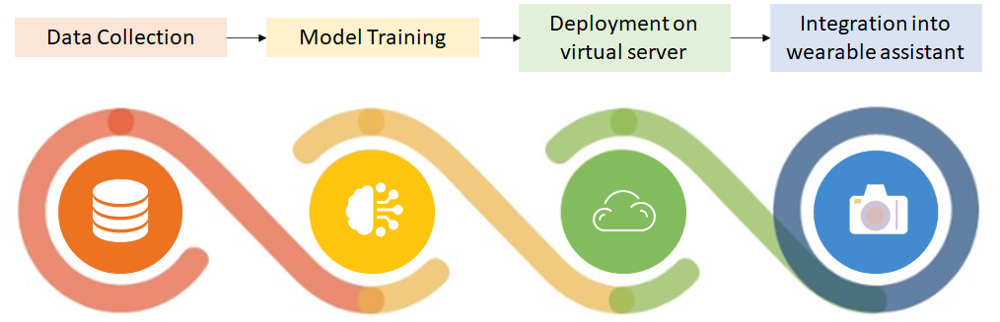

Introduction
Roads in medium-sized Indian towns often have lots
of traffic but no (or disregarded) traffic stops.
This makes it hard to cross the roads safely,
because it involves predicting safe durations using
one’s sight. In this project, we have trained image-
based ML models to predict road crossing safety. Any
suitable dataset did not exist (datasets for
autonomous cars are not recorded from a pedestrian’s
point of view), so we have created our own dataset.
Our dataset consists of 104 videos (>26K frames)
capturing various traffic patterns of Anand, Gujarat, India
using a head-mounted camera. We have also annotated
all videos with timestamps for durations safe for
crossing roads. Using a self-developed CNN architecture, we have
achieved a recall of 0.79 at precision of 0.90 on the
test data. Further, by deploying our pretrained model on Nvidia Jetson
Nano, we have developed a portable road crossing assistant
which is intended to be worn by people who are blind or
suffer from degraded vision, to help them cross busy
roads.
Achievements
 This project has been awarded financial assistance
under the Innovation track of the Govt. of Gujarat’s
Startups & Innovation Policy.
Received AWS credits for this project from AWS
Machine Learning Hero
Mike Chambers through his AWS Machine Learning Competition on
LinkedIn.
This project has been awarded financial assistance
under the Innovation track of the Govt. of Gujarat’s
Startups & Innovation Policy.
Received AWS credits for this project from AWS
Machine Learning Hero
Mike Chambers through his AWS Machine Learning Competition on
LinkedIn.
Workflow

Demonstration video